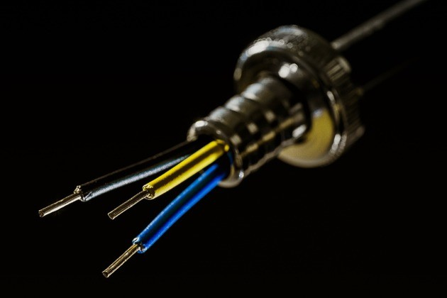

¡Bienvenidos Estudiantes!
Si quieren ver más temas relacionados a la física pueden ver el temario accediendo nuevamente al apartado superior y seleccionando el tema de su elección.

La ley de Ohm se usa para determinar la relación entre tensión, corriente y resistencia en un circuito eléctrico.
Para los estudiantes de electrónica, la ley de Ohm (E = IR) es tan fundamental como lo es la ecuación de la relatividad de Einstein (E = mc²) para los físicos.
E = I x R
Cuando se enuncia en forma explícita, significa que tensión = corriente x resistencia, o voltios = amperios x ohmios, o V = A x Ω.
La ley de Ohm recibió su nombre en honor al físico alemán Georg Ohm (1789-1854) y aborda las cantidades clave en funcionamiento en los circuitos.
Si se conocen dos de estos valores, los técnicos pueden reconfigurar la ley de Ohm para calcular el tercero. Simplemente, se debe modificar la pirámide de la siguiente manera:

Si conoce el voltaje (E) y la corriente (I) y quiere conocer la resistencia (R), suprima la R en la pirámide y calcule la ecuación restante (véase la pirámide primera o izquierda de arriba).
La ley de Ohm expresada en forma de ecuación es:
V = RI
Una regla mnemotécnica para recordar la fórmula de Ohm es recordar que Victoria es la Reina de Inglaterra; V=R.I

Para entender la ley de Ohm, necesitamos aclarar los conceptos de carga, corriente y voltaje, así como explicar en qué consisten los conductores, los aislantes y la resistencia eléctrica.
La fuente de todas las cargas eléctricas reside en la estructura atómica. La carga de un electrón es la unidad básica de la carga. La medida para la carga es el coulomb (C) en honor al físico francés Charles Augustin de Coulomb. La carga de un electrón es igual a 1,60 x10-19 C. Esto significa que una carga de 1 C es igual a la carga de 6,25x1018 electrones.
La corriente eléctrica es el flujo de carga a través de un conductor por unidad de tiempo. La corriente eléctrica se mide en amperios (A). Un amperio es igual al flujo de 1 coulomb por segundo, es decir, 1A= 1C/s.
La corriente eléctrica que fluye por un conductor depende del potencial eléctrico o voltaje y de la resistencia del conductor al flujo de carga.
La corriente eléctrica es comparable al flujo del agua. La diferencia de la presión de agua en una manguera permite que el agua fluya desde una presión alta a una presión baja. La diferencia de potencial eléctrico medido en voltios permite el flujo de las cargas eléctricas por un cable desde una zona de potencial alto a uno bajo.
La presión del agua se mantiene por una bomba, y la diferencia de potencial para la carga se mantiene por una batería.
Aquellas sustancias por donde las cargas se mueven fácilmente se llaman conductores. Los metales son excelentes conductores debido a la descolocación o movimiento de sus electrones en su estructura cristalina atómica.
Por ejemplo, el cobre, que es usado comúnmente en cables y otros dispositivos eléctricos, contiene once electrones de valencia. Su estructura cristalina consta de doce átomos de cobre unidos a través de sus electrones descolocados. Estos electrones pueden ser considerados como un mar de electrones con la capacidad de migrar por el metal.
Aquellas sustancias que resisten al movimiento de la carga son llamadas aislantes. Los electrones de valencia de los aislantes, como el agua y la madera, están fuertemente restringidos y no pueden moverse libremente por la sustancia.
La resistencia eléctrica es la dificultad con la que las cargas eléctricas fluyen a través de un conductor.
Usando la analogía del agua, la resistencia eléctrica puede ser comparada a la fricción del flujo de agua por un tubo. Un tubo liso y pulido ofrece poca resistencia al paso del agua, mientras que un tubo rugoso y lleno de desperdicios hará que el agua se mueva más lentamente.
La resistencia eléctrica está relacionada con la interacción de los electrones conductores a medida que se mueven de átomo a átomo por el conductor. La resistencia se mide en ohms u ohmios, y se representa con la letra griega omega Ω.
Nota: la resistencia no puede medirse en un circuito en funcionamiento. Por lo tanto, para calcularla, la ley de Ohm es muy útil. En lugar de desconectar el circuito para medir la resistencia, un técnico puede determinar la R mediante la variación por sobre la ley de Ohm.
Ahora, si usted conoce el voltaje (E) y la resistencia (R) y quiere conocer la corriente (I), suprima la I y calcule con los dos símbolos restantes (véase la pirámide media anterior).
Y si conoce la corriente (I) y la resistencia (R) y quiere saber el voltaje (E), multiplique las mitades de la parte inferior de la pirámide (véase la tercera pirámide o la ubicada en el extremo derecho arriba).
Cuando Ohm publicó su fórmula en 1827, su descubrimiento principal fue que la cantidad de corriente eléctrica que fluye a través de un conductor es directamente proporcional al voltaje impuesto sobre él. En otras palabras, es necesario un voltio de presión para empujar un amperio de corriente a través de un ohmio de resistencia.
La ley de Ohm puede usarse para validar:
Si, por ejemplo, un instrumento de prueba detecta una medición de corriente más elevada que la normal, puede significar que:
En los circuitos de corriente continua (CC), una medida de corriente inferior a la normal puede significar:
Las cargas existentes en un circuito absorben corriente eléctrica. Las cargas pueden ser cualquier tipo de componente: aparatos eléctricos pequeños, ordenadores, electrodomésticos o un motor grande. La mayoría de estos componentes (cargas) tienen una placa o pegatina informativa. Estas placas incluyen una certificación de seguridad y varios números de referencia.
Los técnicos se refieren a las placas de identificación de los componentes para conocer el voltaje y los valores de corriente estándar. Durante la prueba, si los técnicos notan que los valores tradicionales no se registran en los multímetros digitales o en los medidores de pinza, pueden usar la ley de Ohm para detectar qué parte de un circuito funciona anormalmente y, a partir de eso, determinar dónde puede haber un problema.
Ciencia básica de los circuitos
Los circuitos, como toda materia, están compuestos por átomos. Los átomos se componen de partículas subatómicas:
Los átomos permanecen enlazados entre sí por fuerzas de atracción entre el núcleo y los electrones de un átomo en su capa exterior. Cuando los átomos en un circuito son influenciados por la tensión, comienzan a reformarse y sus componentes ejercen un potencial de atracción conocida como una diferencia de potencial. Los electrones libres mutuamente atraídos avanzan hacia los protones y crean un flujo de electrones (corriente). Cualquier material en el circuito que restringe este flujo se considera como resistencia.
Referencia: Digital Multimeter Principles (Principios de los multímetros digitales) por Glen A. Mazur, American Technical Publishers.